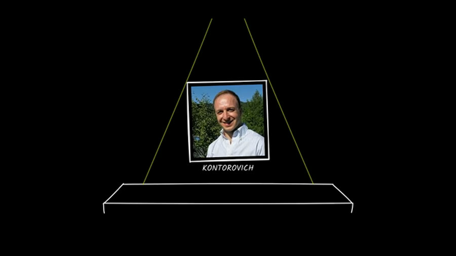

Paste a link. A Claude agent watches the whole transcript, maps it into a narrative arc, pulls every frame and a clip per beat, and writes the full transcript with a translation — all into one self-contained HTML page.

8-minute video → 16 beats, 84 bilingual captions, 98 frames. Open it →
What you get
A color-coded act/beat graph of the whole narrative.
A short looping clip cut at each story beat.
A timestamped gallery, one frame every 5 seconds.
Full captions beside a translation in any language.
A real extraction
Usage
The quickest path — runs the extractor and opens the result.
/tvl-extract https://youtu.be/ID RomanianOne shot straight to a summary.html; prints the path.
./extract.sh "URL" --lang Romanian --openLocal page: live progress, interactive timeline, download.
./run.sh # localhost:8000
Hands-free
With the skill installed you don't need the command — say what you want and Claude runs the tool:
# any of these trigger the tvl-youtube-extractor skill
“summarize this YouTube video: <url>”
“break this video down into a story timeline”
“get me the transcript of <url> with a Romanian translation”
Install
# clone the repo git clone https://github.com/danlex/tvl-youtube-extractor.git cd tvl-youtube-extractor # install the slash command + skill (user scope) cp .claude/commands/tvl-extract.md ~/.claude/commands/ cp -r .claude/skills/tvl-youtube-extractor ~/.claude/skills/
Start a new session and /tvl-extract plus the skill are available everywhere.
Under the hood
claude session — nothing to configure. Set ANTHROPIC_API_KEY
to use the Anthropic API directly instead. Change the language with the second argument:
French, Spanish, German, and more.Requirements
| Tool | Why | Install (macOS) |
|---|---|---|
yt-dlp | download the video | brew install yt-dlp ffmpeg whisper-cpp |
ffmpeg / ffprobe | frames & clips | |
whisper-cli + a ggml model | transcription | |
| Claude Code (logged in) | the agent (session auth) | — |
| Python 3.10+ · Node 18+ | backend · web UI | — |